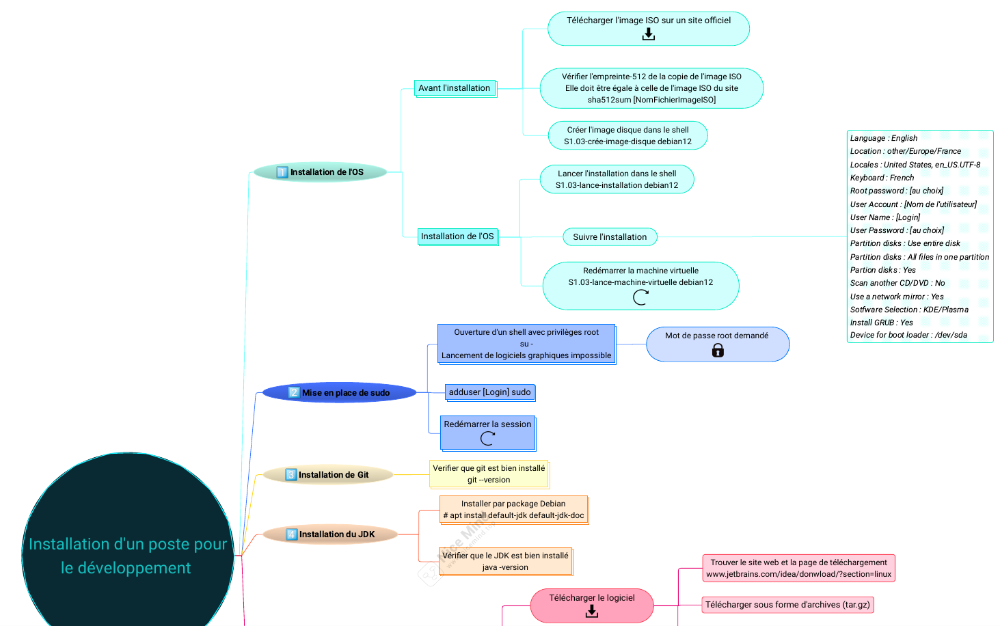
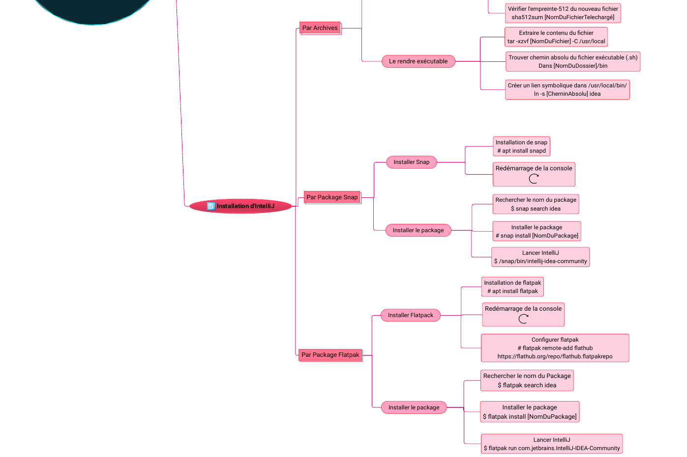

Cette sae s’est déroulée en 4h en autonomie. Le but était de faire un guide d’installation d’un système d’exploitation sous forme de carte mentale.
Nous avions deux heures pour suivre des instructions nous apprenant à installer le système d’exploitation Debian 11, avec environnement graphique, sur une machine virtuelle. Les rendus demandés étaient des captures d’écran de notre avancée à des endroit particuliers, par exemple à la création du nom d’utilisateur ou encore lors de l’installation d’un logiciel.
Nous avions ensuite deux heures dédiées à la réalisation de notre carte mentale qui devait être assez précise pour nous permettre de refaire l’installation sans les instructions données pour la SAE. Nous étions totalement libres sur le choix de présentation de la carte mentale, nous pouvions la réaliser grâce à un logiciel ou manuellement selon nos préférences. Pour ma part, j’ai décidé de prendre en main le logiciel Mindomo. Voici la carte mentale finale.
 En conclusion, cette SAE, bien que plus courte que les autres, m’a beaucoup appris. J’ai pu enrichir mes connaissances sur Linux et je sais désormais comment installer un système d’exploitation, j’ai d’ailleurs installé Debian 12 sur mon propre ordinateur par la suite. Par ailleurs, bien que je m’y connaisse un peu en montage photo/vidéo, c’était la première fois que j’utilisais un logiciel pour créer une carte mentale et j’ai donc dû apprendre à le manipuler pour réaliser ma carte mentale dans un temps restreint.